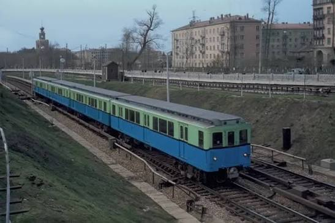
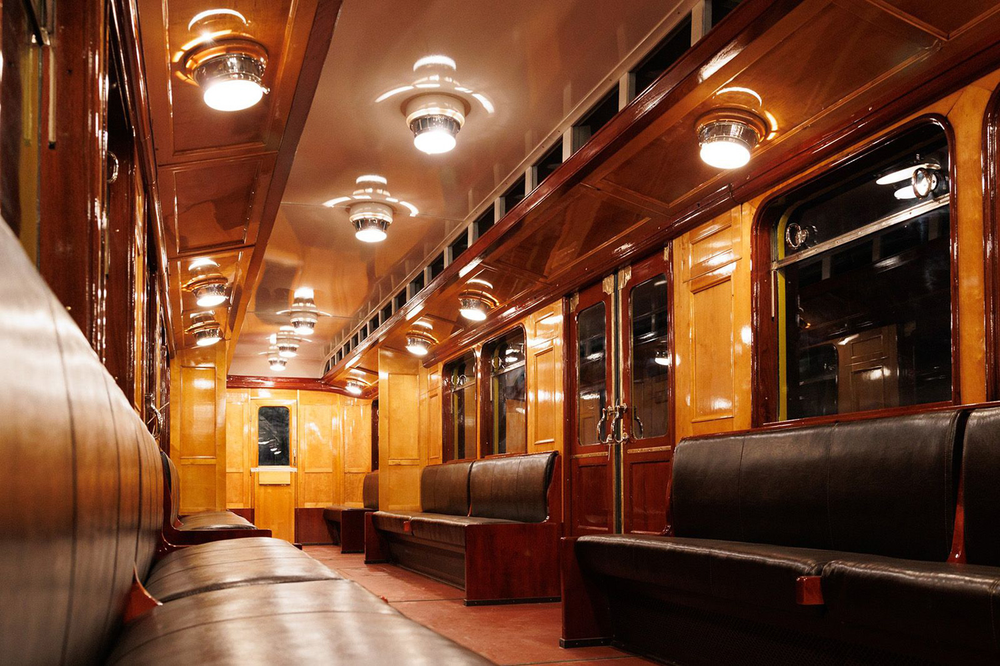

Вагон типа В (Baureihe C)
Вагон типа В — советское обозначение вагонов метрополитена, произведённых в Германии и полученных в качестве репарации после Второй мировой войны. Эти вагоны эксплуатировались в Московском метрополитене с 1946 по 1966 год. В Берлинском метро они были самыми современными на момент создания и послужили образцом для вагонов типа А Московского метрополитена.
Всего из Берлина было вывезено 120 вагонов трёх типов: С-1, С-2 и С-3. В Москве они получили обозначение В-1, В-2, В-3, а позже часть была переоборудована в В-4. Вагоны типа В эксплуатировались в СССР до 1965 года, а в Берлине (вагоны C-II, не вывезенные в СССР) — до 1975 года.
Производство
| Параметр | Значение |
|---|---|
| Обозначение | Baureihe C (нем.), тип В (советское) |
| Годы постройки | 1926—1930 |
| Страна постройки | Веймарская республика 🇩🇪 |
| Заводы | Orenstein & Koppel (Берлин), Wegmann & Co (Кассель) |
| Вагонов построено | 171 (27 С-1, 114 С-2, 30 С-3) |
| Вывезено в СССР | 120 (24 С-1, 69 С-2, 27 С-3) |
| Осталось в Берлине | 51 (3 С-1, 45 С-2, 3 С-3) — в основном C-II, работали до 1975 г. |
| Нумерация в СССР | В-1: 151—162, 1151—1162; В-2: 170—238; В-3: 250—276; В-4: 146—169 |
Технические характеристики
| Параметр | Значение |
|---|---|
| Типы вагонов | Мг / Мп (моторный головной / моторный промежуточный) |
| Длина вагона | 18 400 мм |
| Ширина | 2 650 мм |
| Высота | 3 600 мм |
| Диаметр колёс | 900 мм |
| Масса тары | 29,5 т (С-1) / 30 т (С-2) / 35,5 т (С-3) |
| Выходная мощность | 4 × 110 кВт (С-1) / 2 × 100 кВт (С-2) / 4 × 70 кВт (С-3) |
| Макс. скорость | 60 км/ч |
| Электрическое торможение | Электродинамический |
Особенность: Вагоны оборудовались автосцепками жёсткого типа Шарфенберга, позволявшими одновременно с механическим сцеплением производить соединение воздухопроводов и электрических цепей. Электрическое и механическое оборудование поставлялось заводами «АЕГ», «Сименс», «Кнорр» и др.
Операция по вывозу из Берлина
В связи с увеличением протяжённости сети в 1943—1944 годах на 13,3 км и отсутствием поставок нового подвижного состава с Мытищинского машиностроительного завода на Московском метрополитене к 1945 году стала остро ощущаться нехватка вагонов. Было принято решение вывезти из Берлина часть вагонов метро, наиболее удовлетворявших по своим техническим характеристикам.
Начало операции
В Германию направлена группа специалистов по подвижному составу для решения репарационных вопросов и оценки возможности эксплуатации вагонов типа «С» в условиях Московского метро.
Начало вывоза
Вывоз трофейных вагонов начался. Прямо по уличному асфальту проложили временный путь от метро до железной дороги. Вагоны буксировали паровозами на своих колёсах по европейской колее.
Перевалочная база в Литве
На литовской станции Радвилишкис организована накопительно-перевалочная база. Здесь вагоны грузили на платформы и везли по советской колее до Москвы.
Завершение операции
Операция завершена, база в Литве ликвидирована. Вагоны поступали в Москву на железнодорожных платформах и разгружались на площадке депо «Сокол».
Итог вывоза: Среди вывезенных оказались 24 из 27 вагонов опытной партии «С-1», 69 из 114 типа «С-2» и 27 из 30 типа «С-3». Всего — 120 вагонов. Практически все вагоны С-3 были вывезены в СССР; в Берлине остались лишь единичные экземпляры.
Переоборудование в Москве
В вагоноремонтных мастерских (ныне ЗРЭПС) в 1946–47 гг. была произведена модификация вагонов с большим объёмом работ по переоборудованию на широкую колею:
📏 Перешивка на широкую колею
Повышение кузовов на 20 сантиметров, чтобы доставать до московских платформ. Переклёпка рам тележек: оси заменили, колёсные центры оставили «родные» немецкие, бандажи напрессовывались советские.
⚡ Электрооборудование
Перемонтаж электрических схем, тяговых двигателей и мотор-компрессоров. Отсутствие технической документации на электрооборудование — всё приходилось составлять заново.
🚪 Двери
В берлинском метро двери закрывались по сигналу машиниста, а открывали их пассажиры. После модернизации двери стали и закрываться, и открываться из кабины машиниста. Установлена сигнализация закрытия дверей.
🪑 Салон
Дубовую и буковую отделку салонов сняли, стены оклеили линкрустом. Убрали откидные сиденья в торце салона, гибкие стенки кабин. В советском метро машинист был надёжно ограждён от пассажиров.
Обозначение: Вагоны получили новые номера по московской системе нумерации и обозначение тип «В» («военный»).
Подсерии вагонов типа В
В-1 (бывшие С-1)
- 24 вагона (12 моторных № 151—162, 12 прицепных № 1151—1162)
- Три разновидности формы крыши: фонарная, арочная, полуарочная
- Электрооборудование повреждено водой (затопленные тоннели при штурме Берлина)
- Первоначально использовались только как прицепные
- Позже переоборудованы в В-4
В-2 (бывшие С-2)
- 69 вагонов (№ 170—238)
- Все моторные с кабиной управления
- Одна обмоторенная тележка с двумя двигателями SL-104n по 100 кВт
- Автоматическое управление по системе многих единиц с 24 сквозными проводами
- Рабочий тормоз — пневматический, дисковый
В-3 (бывшие С-3)
- 27 вагонов (№ 250—276)
- Все моторные с кабиной управления
- Четыре двигателя USL-421 по 70 кВт
- Автоматическое управление с 31 сквозным проводом
- Тормоза аналогичны В-2
В-4 (модернизированные В-1)
- Номера с 146 по 169
- Оборудованы троллейбусными двигателями ДК-140А (~80 кВт)
- На промежуточных вагонах установлены кабины машиниста
- Масса тары — 36,5 т
- Электрооборудование — как у вагонов типа Г
Совместимость: Совместная работа вагонов типов «В-2» и «В-3» в одном составе была невозможна из-за разного числа проводов цепей управления (24 и 31). Составы формировались по схеме: пять «В-2» и один «В-1» в середине или четыре «В-3» и два «В-1» в середине.
История эксплуатации
Восстановление первого вагона
Вагоноремонтные мастерские восстановили первый вагон В-3. 11 марта он был обкатан.
Восстановление 35 вагонов
Мастерские восстановили 35 вагонов «В-1» и «В-3».
Начало пассажирской эксплуатации
Первый шестивагонный состав из вагонов типа «В-2» начал работу на Кировско-Фрунзенской (Сокольнической) линии, на участке «Сокольники» — «ЦПКиО».
Модернизация в В-4
Вагоны типа «В-1» оборудованы троллейбусными двигателями ДК-140А. На промежуточных вагонах установлены кабины машиниста. Вагоны получили обозначение «В-4» и номера с 146 по 169.
Подготовка к Филёвской линии
На ЗРЭПСе и в электродепо «Измайлово» вагоны «В-2» и «В-4» перекрашены в «советские» тона (тёмно-голубой низ и серо-зелёный верх) для работы на открывшейся в 1958 году Филёвской линии.
Списание серии В-3
Вся серия «В-3» (27 вагонов) и часть «В-2» (8 вагонов) списаны и переданы для хозяйственных нужд Минтрансстрою.
Передача в депо «Фили»
Все вагоны «В» переданы из депо «Измайлово» в новое электродепо «Фили», где они работали на линии «Калининская» — «Киевская» — «Фили».
Конец эксплуатации в Москве
Вагоны типа В завершили пассажирскую эксплуатацию в Московском метрополитене.
Вторая жизнь в Ленинграде
В Ленинград в общей сложности было передано 6 вагонов типа «В-4», где они получили новое назначение:
№ 153 — вагон-дефектоскоп
Передан 12 августа 1960 года. Переоборудован в электровоз-дефектоскоп № 002. Рабочая скорость — 25—30 км/ч. Ныне в разукомплектованном состоянии в депо «Московское».
№ 156 — вагон-пылесос
Передан 12 августа 1960 года. Опытный образец вагона-пылесоса для сухой очистки тоннелей. Работы прекращены в 1975 году. Сохранён в Петербурге, подлежит восстановлению.
№ 159 и № 162 — электровозы ЭД-01 и ЭД-02
Переданы 28 декабря 1963 года. Изготовлены два контактно-аккумуляторных электровоза. Проработали до 1972 года. ЭД-01 восстановлен в 2010 году, с 2020 года — в музейной экспозиции ТЧ-7 «Южное».
№ 150 и № 160
Переданы 21 марта 1966 года.
Тбилиси: Вагон № 163 передан в Тбилиси в 1966 году и используется там до сих пор в качестве путеизмерителя, приписан к депо «Глдани».
Сохранившиеся экземпляры
До наших дней сохранилось не менее 5 вагонов типа В (в России, Грузии и Германии).
Москва — В-4 № 158
В-4 № 158
- Построен: 1927 (Orenstein & Koppel)
- Модель: В-4 (ранее BVG CI Tw)
- Текущее состояние: Не эксплуатируется, музейный
- Местонахождение: Музей транспорта Москвы
- Особенность: Четырёхосный моторный вагон с кабиной управления, уникальный удлинённый — 4 пары дверей
Санкт-Петербург — В-4 № 156
В-4 № 156 (он же ЭД-01)
- Построен: 1927 (Orenstein & Koppel)
- Модель: В-4 (ранее BVG CI Tw)
- Текущее состояние: Не эксплуатируется, музейный
- Местонахождение: Центр исторического подвижного состава, СПб ГУП «Петербургский метрополитен»
- Особенности: Четырёхосный трёхдверный моторный вагон с кабиной управления. Длина 18,4 м, ширина 2,65 м. Напряжение 750 В DC. Осевая формула Bo'Bo', двигатели 4×110 кВт. 44 сидячих места
Тбилиси — В-4 № 163
В-4 № 163
- Построен: 1927 (Orenstein & Koppel)
- Модель: В-4 (ранее BVG CI Tw)
- Текущее состояние: Эксплуатируется, служебный
- Местонахождение: ТЧ-2 «Глдани», Тбилисский метрополитен
- Назначение: Вагон-путеизмеритель
- Построен: 1927, четырёхосный прицепной вагон без кабины управления для линий широкого профиля. Длина 18,4 м, ширина 2,65 м. Форма кузова 2'2', двигатели отсутствуют. 52 места для сидения
Берлин — вагоны C-II № 1316 и № 1338
C-II № 1316 и № 1338
- Тип: C-II (немецкое обозначение)
- Текущее состояние: Не эксплуатируются, музейные
- Местонахождение: Музей истории метрополитена в депо «Грюневальд», Берлин
- Примечание: Отреставрированы к 100-летию Берлинского метро (2002)
Судьба вагонов в Германии: Часть вагонов типа «С», не конфискованная в СССР, работала в Берлине до весны 1975 года (в основном это были вагоны C-II). К 100-летию Берлинского метро в 2002 году создан Музей истории метрополитена в депо «Грюневальд», где представлены отреставрированные вагоны типа «С-II» № 1316 и № 1338.
Влияние на развитие советского метрополитена
Вагоны типа В дали мощный толчок развитию метровагоностроения в СССР. Многие технические решения и разработки, применённые на них, были использованы при постройке советских вагонов метро.
Из воспоминаний машиниста: «Несмотря на то, что хоть и немецкие вагоны были в основном старыми, по комфорту во время езды их нельзя было сравнить даже с современными, уже не говоря об управлении. Сидишь в кабине машиниста, ведёшь поезд и отдыхаешь».
О внутренней отделке: «Такое впечатление, что ты вошёл во дворец или личный вагон самого вождя».
Фотогалерея

Общий вид вагона.

Общий вид вагона.

Салон вагона В № 158.
Нажмите на фото для увеличения
«Вагоны типа В — уникальный пример того, как трофейная техника не только помогла Московскому метро пережить тяжёлые послевоенные годы, но и дала мощный толчок развитию отечественного метровагоностроения. Многие технические решения, применённые на них, были использованы при постройке советских вагонов метро».